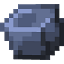

Electrona
Items
You'll find here the list of all Electrona's items.
Electronic Items
Portable Battery
The Portable Battery is like a Battery, but portable. It can be put in the input/output slots of the Battery and of the EL Converter to output or input energy from the block.
Electronic Circuit
The Electronic Circuit is a component needed for almost all of the crafts of the mod.
Motor
The Motor is a component needed for many crafts of Electrona.
Padle
The Paddle is a component needed for the craft of the Water Turbine.
Pump
The Pump is a component needed for the craft of the Water Turbine.
Teleport Saver
The Teleport Saver is an item required to make the Teleporter link to other Teleporters.
Portable Teleporter
The Portable Teleporter is a portable device that allows you to teleport to a teleporter. It can only be obtained by traiding with an Engineer. To have the teleporter's coordinates, you must place this device in a teleporter that has the destination's coordinates and click on the "transfer" button. It needs 500ELs to be used and can be charged with the output slot of a Battery. You can find a video that shows how the Portable Teleporter works right here.
Emitter
The Emitter is a component needed for the craft of the Sprayer. It is sold by the Engineer.
Wireless Booster
The Wireless Booster is an item required to improve the radius effect of the Sprayer. It is sold by the Engineer.
Geiger Pointer
The Geiger Pointer is a custom Compass that leads to the nearest Nuclear Biome.
Energy Analyzer
The Energy Analyzer is an item that analyzes the energy inside a block. To get the number of ELs inside, you must right-click on the block you want to analyze with the item in your main hand.
Ore Items
Raw Tin
The Raw Tin is an item found when mining some Tin Ore with a pickaxe.
Tin Ingot
The Tin Ingot is an ingot obtained by smelting Raw Tin. It is used to make many crafts in the mod.
Tin Plate
The Tin Plate is a plate obtained by crushing a Tin Ingot with a Hammer in a Crafting Table.
Steel Ingot
The Steel Ingot is an ingot obtained by compression an Iron Ingot and a Coal with the Compressor. It is used to make crafts in the mod.
Steel Plate
The Steel Plate is a plate obtained by compressing two Steel Ingots with the Compressor.
Raw Lead
The Raw Lead is an item found when mining some Lead Ore with a pickaxe.
Lead Ingot
The Lead Ingot is an ingot obtained by smelting Raw Lead. It is used to make Lead related stuff. (armor and blocks)
Gravitonium
The Gravitonium is a stone obtained by mining the Gravitonium Ore. It is used to make crafts in the mod.
Other Items
Advanced Totem of Undying
The Advanced Totem of Undying is an advanced version of the Totem of Undying. It can be obtained with the compression of the Totem of Undying and a Nether Star in the Compressor.
Empty Cell
The Empty Cell is a cell made of Tin. It is used to be filled with things.
Water Cell
The Water Cell is an Empty Cell filled with Water by a right click on a Water Source. It is used in some recipes, for machines and generators that use Water.
Lava Cell
The Lava Cell is an Empty Cell filled with Lava by a right click on a Lava Source. It is used in some recipes, for machines and generators that use Lava.
Biomass Cell
The Biomass Cell is an Empty Cell filled with Biomass by a right click on a Composter that have 4 layers of biomass minimum. It is used in some recipes, for machines and generators that use Biomass.

Sugar Bottle
The Sugar Bottle is a bottle with Sugar inside. It is used to make Concentrated Uranium with Yellowcake in a Brewing Stand.
Yellowcake
The Yellowcake is a radioactive matter obtained by the compression of two Uranium Ores in the Compressor. When in inventory, it gives Radioactivity Effect.
Concentrated Uranium
The Concentrated Uranium is a radioactive matter obtained with Sugar Bottle and Yellowcake in a Brewing Stand. When in inventory, it gives Radioactivity Effect.
Purified Uranium
The Purified Uranium is a radioactive matter obtained by the purification of three Concentrated Uranium in the Purificator. When in inventory, it gives Radioactivity Effect.
Uranium Bar
The Uranium Bar is a radioactive fuel obtained by the compression of two Purified Uranium in the Compressor. It is used in the Nuclear Generator Controller to power the Nuclear Generator. When in inventory, it gives Radioactivity Effect.
Uranium Dual Bar
The Uranium Dual Bar is a radioactive fuel obtained by the compression of two Uranium Bars in the Compressor. It is used in the Nuclear Generator Controller to power the Nuclear Generator. When in inventory, it gives Radioactivity Effect.
Uranium Quad Bar
The Uranium Quad Bar is a radioactive fuel obtained by the compression of two Uranium Dual Bars in the Compressor. It is used in the Nuclear Generator Controller to power the Nuclear Generator. When in inventory, it gives Radioactivity Effect.
Cosmic Gem
The Cosmic Gem is an item that is dropped by the Singularity a while after it has spawned. Each gem has only one power that is randomly defined when dropped. The available powers are: Dimensional Travel, Flying, Invisibility, Knockback, Strength, Teleportation and Yo-Yo.
Gravity Device
The Gravity device is an item made of Gravitonium. It is used to craft the Gravitor.
Tools
Hammer
The Hammer is a tool made of Tin and used to crush Tin Ingots in a Crafting Table to make Tin Plates. Every time it is used to crush, it looses durability.
Steel Tools
Steel Tools are tools made of Steel. Their harvest level is 4 (like Netherite) and they are all craftable with Sticks and Steel Ingots. Steel Tools are the only tools compatible with the Enchantments Lumberjack, Smelting, Thundering, and Veinminer.
Armors
Anti-Radiation Suit
The Anti-Radiation Suit is an armor preventing the player who wears it from taking any damage from radioactive items he could have in his inventory.
Lead Armor
The Lead Armor is an armor made of lead. If you wear it, and have a radioactive item in your inventory, it prevents the radioactivity from expanding to other entities around you.
Mechanic Wings
Mechanic Wings are a mix between Elytra and a jetpack. They can be charged the same way you can charge a Portable Battery and they need power for you to fly up. When you fall, even without any power, they can be used to glide.